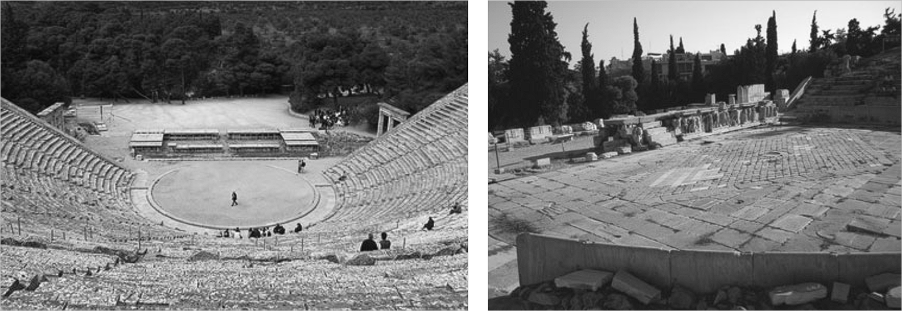

08 Influenza Acustica del Pubblico
Gli studi disponibili sull’acustica del Teatro di Epidauro sono solitamente eseguiti a teatro vuoto e, in un solo caso a me noto, a teatro parzialmente occupato da 3.000 spettatori, ovvero poco meno di ¼ della sua capienza complessiva1.
Il risultato di questa indagine ha mostrato risultati prevedibili, come un lieve calo della riverberazione ed una significativa riduzione della spazialità dovuta all’assorbimento delle riflessioni generate dai gradini da parte dei 3.000 spettatori mentre il tempo di riverberazione, a teatro vuoto, si attesta attorno a 1.2 secondi alle frequenze medie (500Hz – 1KHz) confermando quanto rilevato da altri autori.
A questo punto occorre però chiedersi: come e in qual misura mutavano le condizioni d’ascolto per gli spettatori a teatro totalmente occupato?
È doveroso innanzitutto ribadire la connotazione rituale degli spettacoli che richiamavano oltre ai greci anche i cittadini stranieri dei paesi vicini; Epidauro poteva ospitare comodamente circa 14.000 spettatori ma alcuni studiosi ne ipotizzano anche 17.000 in occasione di eventi particolarmente importanti!
Insomma era ben difficile a quei tempi trovare il teatro semivuoto e di questo dobbiamo tener conto per una ricostruzione acustica se non vera almeno verosimile.
Una tale quantità di persone o se vogliamo di unità fonoassorbenti per certo vanificava l’effetto delle riflessioni prodotte dai gradini della cavea esaminate in precedenza rendendo l’acustica particolarmente “asciutta” perché privata di significative riflessioni di rinforzo. E la scena alle spalle degli attori o l’orchestra in terra battuta potevano fornire di certo un qualche contributo, ma limitato unicamente alla prima riflessione; pertanto l’unico miglioramento avvertibile era quello che, con tanta superficie fonoassorbente, a teatro occupato sparivano gli echi ribattuti generati dai gradini della cavea ed il fronte della scena che gli attori sicuramente percepivano a teatro vuoto durante le prove.

Fig. 1.8 Orchestra del Teatro di Epidauro (sx) e del Teatro di Dioniso (dx)
La figura 7.1 mostra l’orchestra in terra battuta del teatro di Epidauro, tuttora esistente, e l’orchestra in pietra del teatro di Dioniso, anch’essa originariamente in terra battuta ma successivamente lastricata durante il periodo romano.
La tabella seguente illustra la notevole differenza del comportamento acustico dei due materiali: nelle frequenze medie e centrali, che interessano in modo particolare la voce maschile, la terra battuta assorbe sino al 40% dell’energia che la investe mentre il marmo o la pietra sono quasi perfettamente riflettenti.
| Frequenze (Hz) | 125 | 250 | 500 | 1000 | 2000 | 4000 |
|---|---|---|---|---|---|---|
| Terra battuta | 0.15 | 0.20 | 0.40 | 0.35 | 0.55 | 0.60 |
| Marmo / Pietra Liscia | 0.01 | 0.01 | 0.01 | 0.012 | 0.015 | 0.02 |
| Coefficenti di assorbimento acustico (α). |
Allo scarso contributo acustico dell’orchestra in terra battuta si aggiunga il rumore antropico degli spettatori e il rumore di fondo “naturale” del sito che, per quanto relativamente basso, comprometteva certamente l’intelligibilità vocale, specie nelle zone più lontane dalla scena e, soprattutto, l’annullamento delle riflessioni dei gradini della cavea perché totalmente assorbite dal pubblico.
È lecito allora condividere il parere di diversi studiosi che sostengono che in tali condizioni ci troviamo essenzialmente in un ambito acustico di “campo libero” perché quasi privo di superfici riflettenti acusticamente utili, necessarie per assicurare un adeguato ascolto in un ambiente di tali dimensioni.
Una risposta definitiva si potrà avere solo ricostruendo l’antica scena andata perduta e programmando una qualche tragedia rispettosa della drammaturgia, della strumentazione e della posizione degli attori, aspetti che peraltro sono ancora incerti e controversi.
E per una ricostruzione acustica verosimile sarebbe opportuno “eliminare” anche l’ampliamento della cavea operato dai romani, magari ricoprendola provvisoriamente con terra o altro materiale fonoassorbente perché, in realtà, l’impianto che noi oggi vediamo e misuriamo ad Epidauro è stato radicalmente modificato nelle sue proporzioni con il raddoppio della capienza originaria della cavea.
Ma, al di la dei dubbi o di ogni ragionevole congettura, dobbiamo constatare che questi grandi teatri hanno funzionato per secoli, ed anche piuttosto bene se consideriamo i successivi modelli che hanno generato.
Non sarebbe allora opportuno “leggere” questi teatri anche con gli occhi ed i mezzi tecnici del tempo, magari utilizzando matita e righello?2
Possiamo forse trascurare che la teatralità greca si compiva attraverso processi del tutto diversi da quelli attuali o che nell’etimologia greca théatron significa luogo per vedere piuttosto che per sentire?
Tutto questo lascia aperte numerose questioni che coinvolgono l’organizzazione dello spazio acustico dello spettacolo greco, gli aspetti psicologici e le modalità percettive – e non solo acustiche – degli spettatori del tempo.
E per la valutazione di uno spazio solo apparentemente semplice come il teatro antico, forse non sono sufficienti i soli descrittori acustici convenzionali definiti negli ultimi decenni e ricavati sperimentalmente all’interno di spazi confinati.
Per queste ragioni oggi risulta indubbiamente complesso dare giudizi definitivi in merito se non si contestualizzano i codici del teatro di allora, giudizi che in tempi moderni hanno fatto comprensibilmente esclamare: “All’aperto si gioca a bocce, non si suona!”3.
-
S. Psarras, P. Hatziantoniou, M. Kountouras, N. A. Tatlas, J. N. Mourjopoulos, D. Skarlatos, Measurements and Analysis of the Epidaurus Ancient Theatre Acoustics. ↩
-
2 A. Cocchi, Theatre Design in Ancient Times: Science or Opportunity?. ↩↩
-
Sebbene solitamente attribuita ad Arturo Toscanini, la frase fu probabilmente di Antonio Guarnieri. ↩